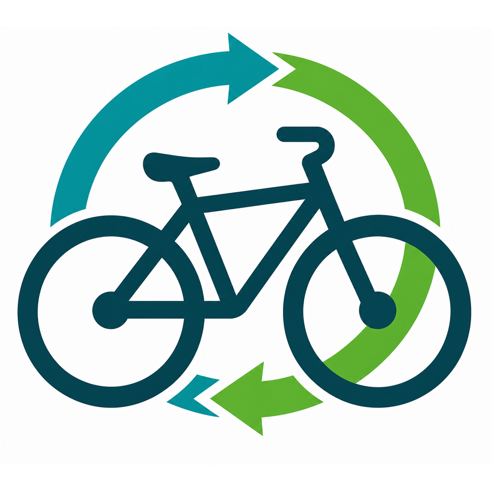

BIKE LOOP
버려진 자전거를 사진 한 장으로 신고하면,
앱이 수학으로 최적의 수거 경로를 계산하고,
수거된 자전거는 수리·기부·재사용으로 다시 순환합니다.
1 어떤 문제를 풀고 싶었나
아파트 보관대, 학교 앞, 골목길 — 어디에나 주인 잃은 자전거가 방치되어 있습니다.
방치 자전거는 통행을 방해하고, 도시 미관을 해치고, 재활용될 수 있는 자원을 낭비합니다. 특히 제주 국제학교 단지처럼 졸업·이사 시즌마다 자전거가 한꺼번에 버려지는 지역에서는 문제가 주기적으로 반복됩니다.
| 기존 방식의 문제 | BIKE LOOP의 해결 |
|---|---|
| 신고가 흩어짐 | 앱 한 곳에 사진·위치·유형이 구조화되어 접수 |
| 중복 신고 구분 불가 | 제출 직전 반경 30m 자동 확인 + 관리자 중복 처리 |
| 감으로 다니는 수거 | OR-Tools 최적화로 방문 순서·수거량 자동 계산 |
| 처리 현황 불투명 | 신고자가 접수→수거 완료까지 실시간 확인 |
| 수거 후 그냥 폐기 | 재고로 등록해 수리·기부·재사용으로 순환 관리 |
앱 이름 BIKE LOOP의 "LOOP(순환)"는 두 가지를 뜻합니다 — 수거 차량이 도는 최적 경로, 그리고 버려진 자전거가 다시 쓰이는 자원의 순환.
2 앱이 작동하는 전체 흐름
일반 사용자(초록)와 관리자(검정)의 역할이 이어달리기처럼 연결됩니다. 이 10단계가 MVP 완성 기준입니다.
3 화면으로 보는 BIKE LOOP
브랜드 컬러는 틸(#05A1A2)과 딥그린(#1B7742), 폰트는 Varela Round입니다.
👤 일반 사용자

로그인 화면

지도 탭

신고 작성

위치 검색

내 신고

중복 안내(선택)
🛠 관리자

검토 탭

작업 탭

경로 계산 중

수거 동선 지도

재고 탭

통계 탭

재고 상세(상태 변경)
4 시스템 구조 — 세 조각
"모든 걸 직접 만들지 말고, 잘하는 도구에게 맡기자"가 설계 원칙입니다.
| 조각 | 역할 | 왜 이걸 골랐나 |
|---|---|---|
| Flutter 앱 | 사용자가 보는 모든 화면 | 코드 하나로 안드로이드·아이폰 모두 지원 |
| Supabase | 데이터·로그인·사진·권한 | 서버 없이 DB 직접 사용. 위치 계산(PostGIS) 내장 |
| 최적화 서버 | 경로 계산 + 카카오 API 중계 | OR-Tools가 파이썬용이라 이 부분만 분리. 파일 7개짜리 초소형 |
5 핵심 로직 — 쉽게 풀어보기
① 수거 경로 최적화 ⭐ 이 앱의 심장
문제: "수거할 자전거가 여러 군데 흩어져 있다. 트럭은 20대까지 싣고, 4시간 안에 돌아와야 한다. 어디를, 몇 대씩, 어떤 순서로 가야 가장 효율적일까?"
이건 수학에서 차량 경로 문제(CVRP)라 부르는 유명한 난제입니다. 지점이 10곳만 되어도 가능한 순서가 362만 가지가 넘어서 사람이 비교할 수 없습니다. 그래서 구글의 최적화 라이브러리 OR-Tools로 풉니다.
BIKE LOOP의 엔진은 단순히 순서만 정하지 않고, 아래를 동시에 결정합니다:
| 결정 사항 | 설명 |
|---|---|
| 핫스팟 묶기 | 30m 이내 자전거들을 한 지점으로 묶어 한 번에 처리 (연쇄로 뭉치는 문제 방지) |
| 긴급도 판단 | 신고 경과일로 등급 부여 — Critical(90일↑) / High(60일↑) / Medium(30일↑) / Normal |
| 수거량 선택 | 한 지점에서 전부 실을지, 급한 것만 골라 실을지 |
| 방문 순서 | 출발지 → 선택된 지점들 → 보관소 |
제약 조건: 차량 적재량, 작업 가능 시간, 지점별 작업 시간. 이를 넘으면 덜 급한 지점은 다음으로 이월됩니다.
순서가 정해지면 카카오모빌리티 길찾기로 실제 도로 경로를 받아 지도에 그립니다 — 직선이 아니라 진짜 다니는 길이 표시됩니다.
② 중복 신고 자동 탐색
같은 자전거를 두 사람이 신고하면 데이터가 엉킵니다. 그래서 제출 직전 데이터베이스에 묻습니다: "이 좌표 반경 30m 안에 처리 중인 신고가 있니?"
이 계산은 DB에 내장된 지리 기능(PostGIS의 ST_DWithin)이 담당합니다 —
지구가 둥근 것까지 고려해 실제 거리를 재줍니다. 가까운 신고가 있으면 사용자에게 안내하고,
관리자도 같은 기능으로 중복을 골라낼 수 있습니다.
③ 주소 변환·장소 검색과 보안
GPS는 33.3061, 126.2864 같은 숫자를 줍니다. 사람에겐 "제주시 한경면 저지리"가 낫죠.
이 변환(역지오코딩)과 장소 검색은 카카오 API를 씁니다.
보안 원칙: API 키를 앱에 넣으면 앱을 뜯어본 사람이 훔쳐갈 수 있습니다. 그래서 키는 서버에만 두고, 앱은 서버에게 대신 물어보는 구조(프록시)로 만들었습니다.
④ 권한을 데이터베이스가 직접 지킨다
일반 사용자가 남의 신고를 지우거나 스스로를 관리자로 승격시키면 안 되겠죠. 보통은 서버 코드에서 검사하지만, 우리는 DB 자체에 규칙을 새기는 방식(RLS)을 썼습니다.
| 행동 | 일반 | 관리자 |
|---|---|---|
| 지도에서 신고 보기 | 가능 | 가능 |
| 신고 만들기 | 본인 이름으로만 | 가능 |
| 승인·수거·재고 관리 | ❌ | 가능 |
| 자기 등급 바꾸기 | 둘 다 ❌ — 운영 콘솔에서만 | |
규칙이 DB에 있으니 앱에 실수가 있어도 데이터 자체는 뚫리지 않습니다.
⑤ 자원 순환 관리
수거는 끝이 아니라 시작입니다. 수거 즉시 자전거에 관리번호가 자동 부여됩니다 —
제주시_20260806_001 형식으로 지역_수거일_순번 구조라, 번호만 봐도 언제 어디서 왔는지 압니다.
이후 상태는 보관 → 수리 / 기부 / 재사용 / 폐기로 관리되고, 보관 장소도 기록합니다. 대시보드의 재생률(수리+기부+재사용 ÷ 전체 처리)이 이 앱의 사회적 성과 지표입니다.
6 데이터는 어떻게 저장되나
엑셀 시트 5장이 서로 연결되어 있다고 생각하면 쉽습니다.
| 테이블 | 담는 것 | 비유 |
|---|---|---|
| profiles | 사용자와 등급(일반/관리자) | 회원 명부 |
| reports | 신고 1건 — 사진·좌표·주소·유형·상태 | 신고 접수 대장 |
| collection_jobs | 수거 작업 — 차량 조건·총거리·도로 경로 | 배차 일지 |
| job_stops | 방문 순서와 완료 여부 | 배달 순서표 |
| bikes | 재고 — 관리번호·상태·보관 장소 | 창고 재고 장부 |
신고 상태의 흐름:
중요한 원칙 하나: 신고 기록은 지우지 않습니다. 수거가 끝나도 "수거 완료" 상태로 남아, 신고자는 결과를 계속 볼 수 있고 처음부터 끝까지 이력이 추적됩니다.
7 만들기 전에 검증부터 — NYC 공공데이터 실험
"이 방법이 진짜 통할까?"를 앱을 만들기 전에 실제 데이터로 확인했습니다.
제주에는 아직 방치 자전거 데이터가 없어서, 뉴욕시 311 민원 공공데이터 (방치 자전거 신고 2,930건, 2020~2021)로 세 가지를 미리 실험했습니다.
| 실험 | 방법 | 결과 |
|---|---|---|
| 핫스팟 분석 | KDE(밀도 지도) + Getis-Ord Gi*(통계적 밀집 검정) | 브롱크스의 한 지점(94건)이 최상위 핫스팟으로 검출 — 자동으로 "어디에 몰리는지" 찾을 수 있음을 확인 |
| 경로 최적화 | OR-Tools CVRP, 트럭 3대 × 용량 60대 | 총 82.1km로 180대 수거. "대형 지점은 나눠 방문, 초과분은 이월"이라는 실전 규칙을 여기서 발견해 앱에 반영 |
| 계절성 분석 | 월별 신고량 추이 | 여름 피크(6월 187건) / 겨울 저점(12월 81건) — 시즌 예측 가능성 확인. 제주의 졸업 시즌에 응용 예정 |


8 어떻게 만들었나
| 단계 | 한 일 |
|---|---|
| 0. 검증 | NYC 공공데이터로 핵심 방법론 실험 (핫스팟·경로·계절성) |
| 1. 기획 | 역할 2개(일반/관리자), MVP 완료 기준 10단계 정의 |
| 2. 백엔드 | Supabase 테이블 5개 + 보안 규칙(RLS) + 중복 탐색 함수 + 관리번호 자동 채번 |
| 3. 앱 | Flutter로 사용자·관리자 화면, 카카오맵 연동 |
| 4. 최적화 서버 | FastAPI + OR-Tools. 팀원(이강혁)의 최적화 프레임워크를 서버로 이식, 파라미터는 환경변수로 조정 가능하게 |
| 5. 디자인 | Claude Design으로 시안 제작 → 색·간격을 코드에 이식. BIKE LOOP 브랜딩 적용 |
| 6. 배포 | 서버를 Google Cloud Run에 배포 → 어디서든 접속 가능. 안드로이드 APK로 실기기 설치 |
| 7. 검증 | 실기기에서 신고→승인→경로 생성→수거→재고→통계 전 과정 확인 |
사용 도구: Flutter/Dart Supabase(PostgreSQL·PostGIS)
Python·FastAPI Google OR-Tools 카카오맵·로컬·모빌리티 API
Google Cloud Run Claude(AI 페어 프로그래밍)
모든 진행 상황은 blueprint.txt 하나에 기록하며 개발했습니다 —
기능 목록, 설계 결정과 그 이유, 날짜별 작업 로그가 남아 있어 누구든 이어받을 수 있습니다.
9 지금의 한계와 다음 계획
| 한계 | 계획 |
|---|---|
| 순서 계산은 직선거리 기준 (표시만 도로) | 카카오모빌리티 거리·시간 행렬을 계산 단계에도 적용 |
| 차량 1대 기준 | 다중 차량 배차로 확장 (엔진은 이미 지원 가능한 구조) |
| 실데이터 부족 (콜드스타트) | 초기엔 "졸업 시즌 + 기숙사 반경" 규칙으로, 신고가 쌓이면 NYC 실험에서 검증한 핫스팟 예측 모델 가동 |
| 제주 지역 한정 | 선배포 후 지역 확대 (경계 설정만 바꾸면 됨) |
| 수거 완료 사진 미구현 | 현장 증빙 사진 업로드 추가 |
최종 목표는 앱 + 연구 보고서가 한 세트인 프로젝트입니다 — 실제로 도시 문제를 푸는 도구이자, 공간 통계와 최적화 알고리즘을 실데이터로 검증한 연구이기도 합니다.
10 용어 사전
- CVRP (차량 경로 문제)
- 용량 제한이 있는 차량이 여러 지점을 도는 최단 경로를 찾는 수학 문제. 택배·수거 업계의 핵심 문제.
- OR-Tools
- 구글이 만든 무료 최적화 라이브러리. CVRP 같은 어려운 조합 문제를 빠르게 풀어준다.
- 핫스팟 클러스터링
- 가까이 모인 신고들을 하나의 방문 지점으로 묶는 것. 이 앱은 반경 30m 기준.
- PostGIS
- 데이터베이스에 지도·좌표 계산 능력을 더하는 확장. "반경 30m 안에 뭐가 있나" 같은 질문을 처리.
- RLS (행 수준 보안)
- 데이터 한 줄 한 줄에 "누가 읽고 쓸 수 있는지" 규칙을 붙이는 보안 방식.
- 역지오코딩
- GPS 좌표를 사람이 읽는 주소로 바꾸는 것.
- API 키 / 프록시
- 외부 서비스를 쓰는 비밀 열쇠 / 앱 대신 서버가 요청을 전달해 키를 숨기는 방식.
- KDE · Getis-Ord Gi*
- 점들이 얼마나 빽빽한지 색 지도로 그리는 기법 / 그 밀집이 통계적으로 의미 있는지 판별하는 방법.
- Cloud Run
- 구글의 서버 실행 서비스. 요청이 없으면 잠들어 비용이 들지 않는다.
- 재생률
- 수거한 자전거 중 수리·기부·재사용으로 다시 쓰인 비율. 이 앱의 사회적 성과 지표.
- MVP · 콜드스타트
- 핵심 기능만으로 작동하는 첫 버전 / 서비스 초기에 데이터가 없어 똑똑한 기능을 쓰기 어려운 문제.